Sophie
Sophie 于 2014 年夏天加入北航 Toastmasters。在第 65 次会议上，她与 Cindy、Stan 一起被正式接纳为新会员；很快便在第 67 次会议以 CC1《Enjoy the Life》完成破冰首秀——纪要里写她热爱生活，读书、画画、运动样样在行，是个独立而有故事的姑娘。此后她一路稳扎稳打：第 71 次的 CC2《Slow Down》谈在快节奏的北京学会慢下来，第 74 次的 CC3《Mind Your Habit》讲习惯的力量，第 89 次的 CC4《Glad You Came》写珍惜身边的友人，第 92 次的 CC5《Extend Your World》鼓励大家走出舒适区、拥抱更大的世界。她还在 2014 年秋季幽默演讲赛中作为中文组选手登台。
进入俱乐部不久，Sophie 就成了舞台上最活跃的身影之一：频繁担任主持人（Toastmaster）与即兴主持（TTM），并多次做点评官。2014 年底的告别派对上，她与 Doris、Keven 一起主持"Saying Goodbye"环节，并献唱《青春的纪念册》。2015 年新年伊始的第 84 次会议，她正式接任主席——纪要称她为"新任主席 Sophie"，开启了一个新的篇章。在她任内，俱乐部稳步壮大；第 100 次纪念会议回顾俱乐部历史时，特意写下"及至现任 Sophie 的欣欣向荣"，把她与 Wesley、Peter、Doris 几代主席并列致敬。
卸任后，Sophie 并未离开。在第 113、116、117、120、142 等多次会议中，她以资深会员身份回归，担任主持与即兴演讲者，屡获最佳即兴演讲（Best Table Topic Speaker）。会员们亲切地称她"Queen Sophie""Sophie 大王"，形容她"气场强大""总能列出（1）（2）（3）的领导讲话气质"，又带着南方姑娘的智慧与独立。从破冰的新人到俱乐部掌门，再到台下默默支持的老会员，Sophie 用整段头马旅程诠释了"头马人永不毕业"。
里程碑
- 2014-06-27 正式入会 ↗第65次会议Initiation，与Cindy、Stan一同被接纳为新会员。
- 2014-08-22 破冰首秀 CC1 ↗第67次会议完成CC1《Enjoy the Life》，开启CC之路。
- 2014-12-26 告别派对献唱 ↗第83次Farewell Party与Doris、Keven主持'Saying Goodbye'，独唱《青春的纪念册》。
- 2015-01-09 当选主席 ↗第84次会议起担任俱乐部主席，被称'新任主席Sophie'。
- 2015-06-17 百次会议获致敬 ↗第100次纪念会议历史回顾中，作为现任主席与历届主席并列，'Sophie的欣欣向荣'。
- 2016-06-20 回归老会员 ↗第142次换届会议仍以资深会员身份参与即兴演讲，新任掌门交棒Joshua。
闯关之路 · Competent Communication
做过的演讲 · 6 场
担任过的职务 · 俱乐部官员
担任过的会议角色
为俱乐部做的事
- 2015年起担任俱乐部主席，带领北航头马走向'欣欣向荣'，被列入历届主席传承名录
- 高频担任主持人(TM)与即兴主持(TTM)，是会议舞台上最稳定的支柱之一
- 多次担任点评官，帮助新会员打磨破冰与进阶演讲
- 卸任后仍以资深会员身份回归参会、做即兴演讲，传递'头马人永不毕业'的精神
- 在告别派对等重要场合主持告别环节并献唱，营造俱乐部温暖的人文氛围
- 代表俱乐部参加2014秋季幽默演讲赛中文组
照片墙 · 时间线
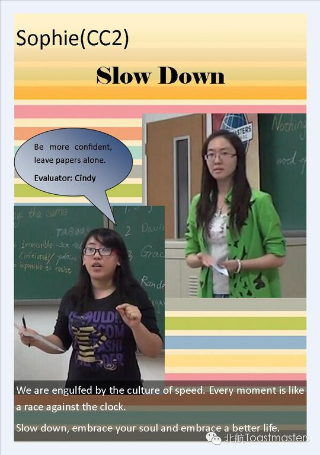
✓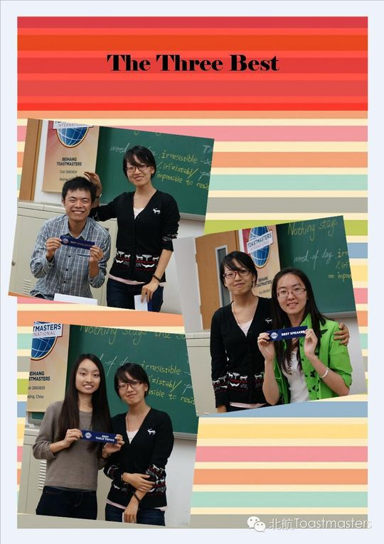
✓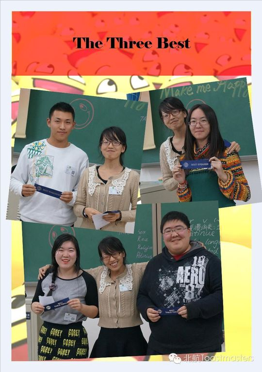
✓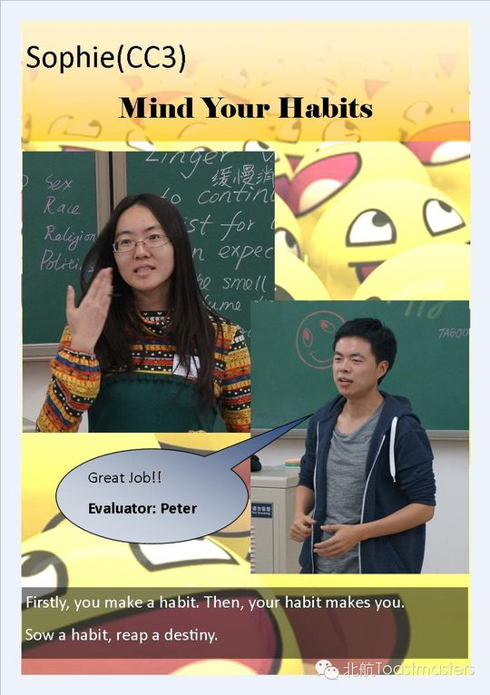
✓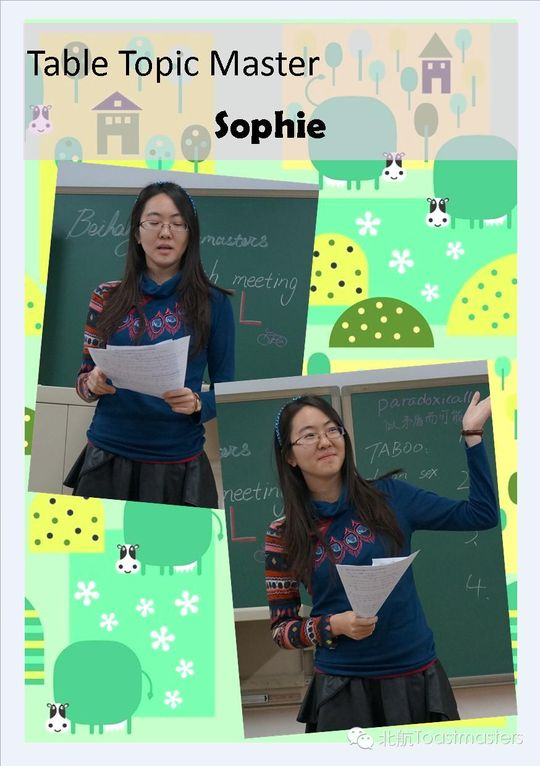
✓ ✓
✓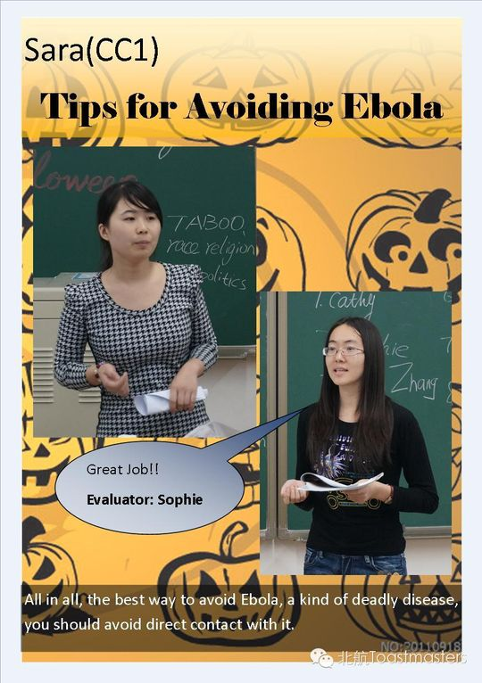
✓ ✓
✓ ✓
✓ ✓
✓ ✓
✓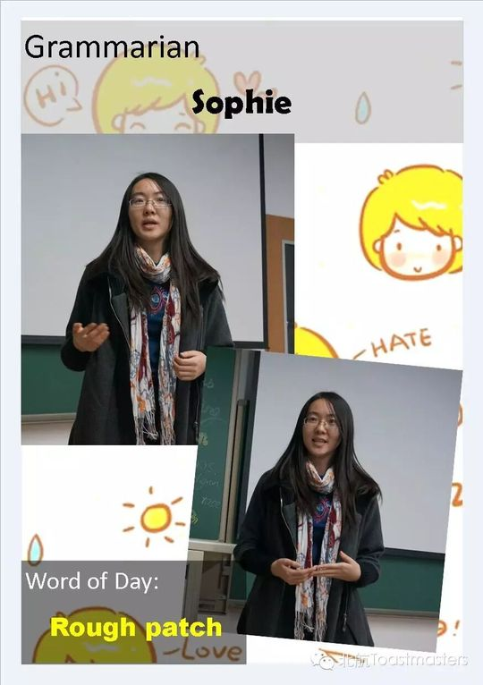
✓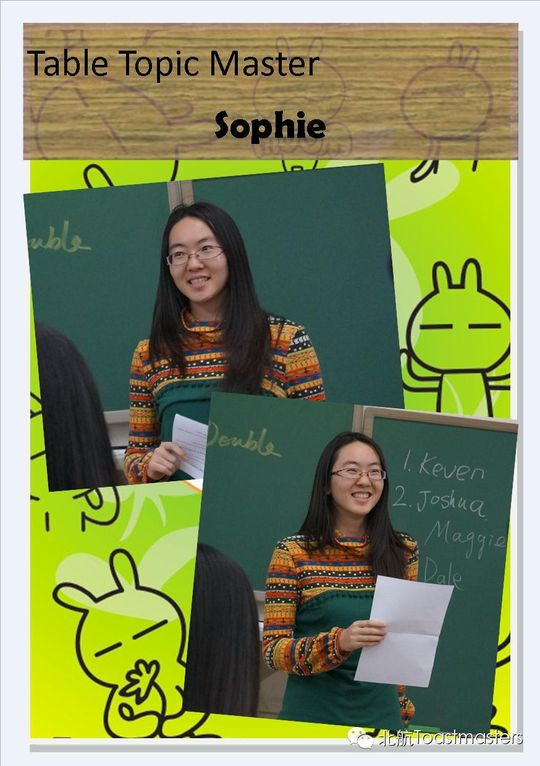
✓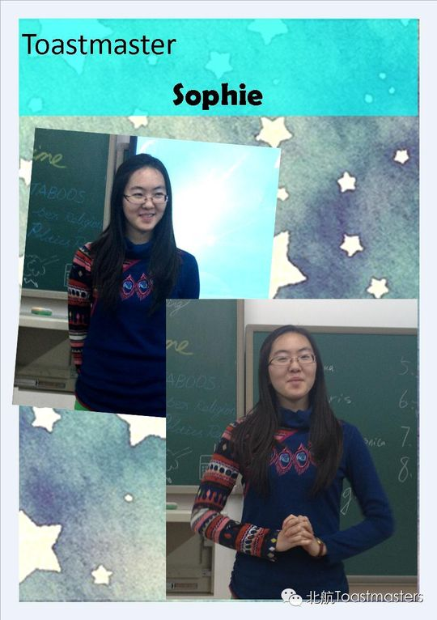
✓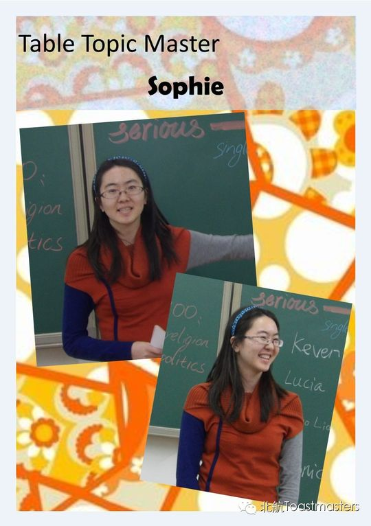
✓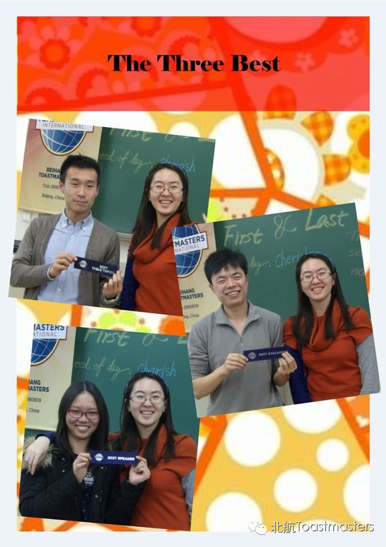
✓ ✓
✓ ✓
✓ ✓
✓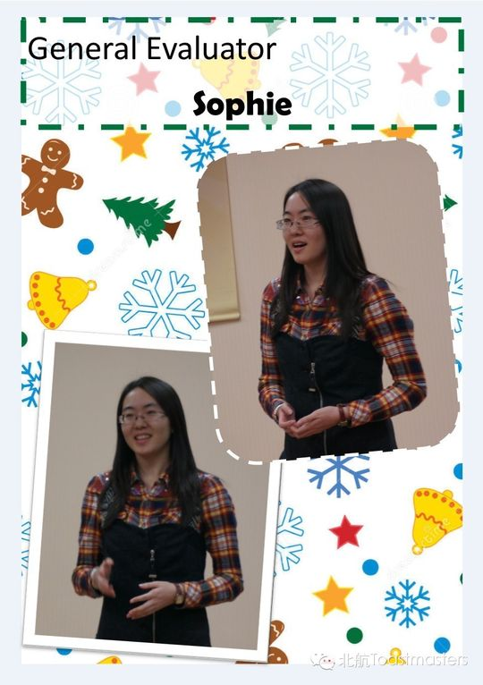
✓ ✓
✓ ✓
✓ ✓
✓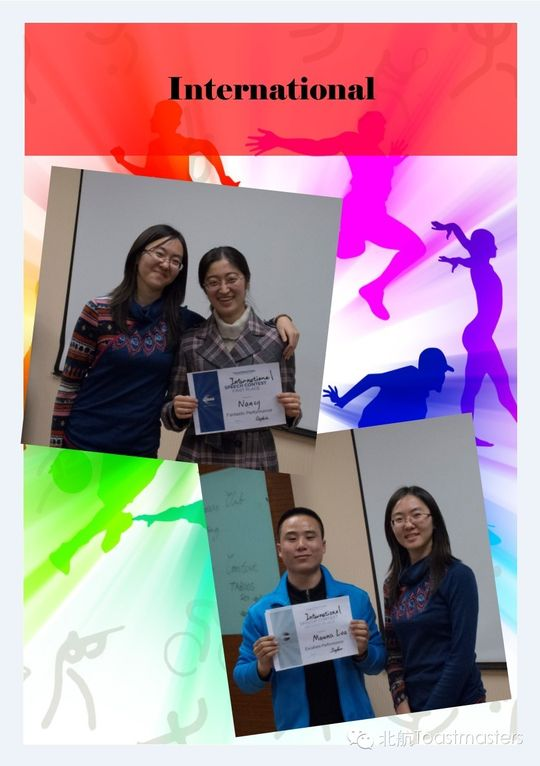
✓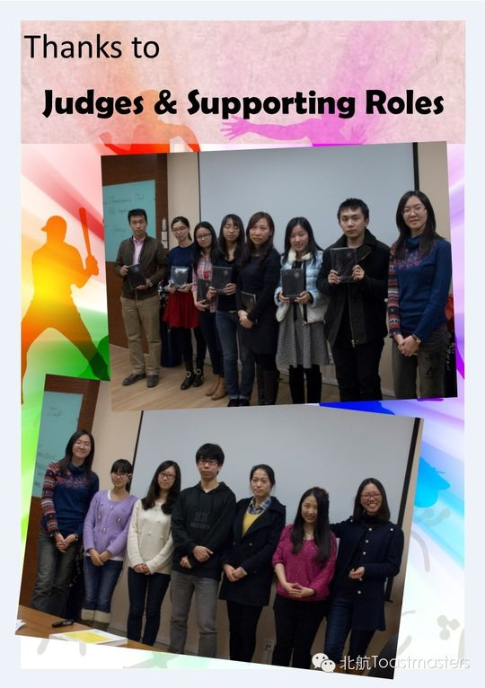
✓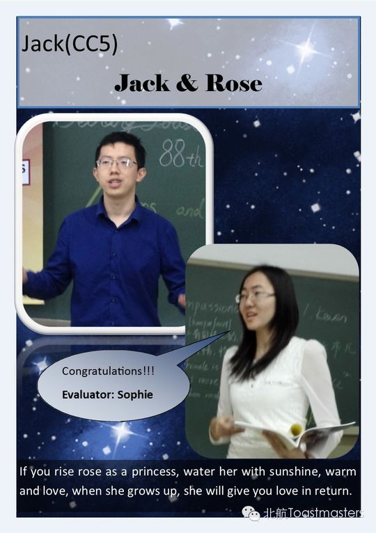
✓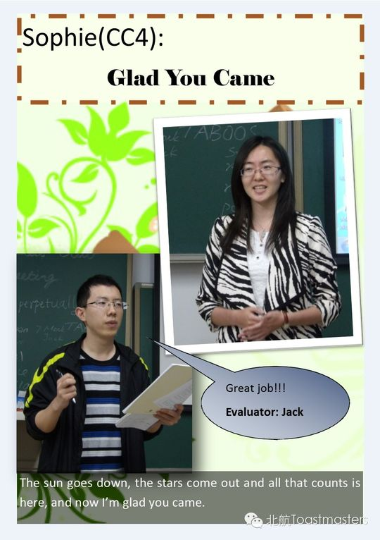
✓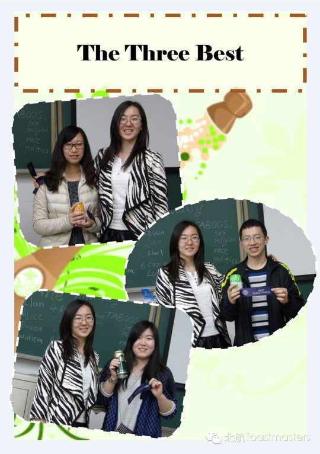
✓ ✓
✓ ✓
✓完整足迹 · 28 次出现（点开，每条可跳转原文）
- 2014-06-27第65次 · 作为新会员之一举行入会仪式(Initiation)
- 2014-07-04担任第66次会议主持人
- 2014-08-21第67次 · 担任即兴演讲主持,并做CC1演讲《Enjoy the Life》
- 2014-09-04参加中文幽默演讲比赛
- 2014-09-11第70次 · 担任第70次会议主持人
- 2014-09-18第71次 · 做CC2备稿演讲《SLOW DOWN》
- 2014-10-16第74次 · 演讲 Mind Your Habit
- 2014-10-23第75次 · 担任桌话主持
- 2014-11-13第78次 · 担任Jane演讲的Evaluator
- 2014-12-04第80次 · 担任桌话主持
- 2014-12-05第80次 · 担任桌话主持
- 2014-12-11第81次 · 担任81次会议主持
- 2014-12-22第80次 · 担任桌话主持
- 2014-12-22第81次 · 担任81次会议主持
- 2014-12-26第83次 · Farewell Party @BeihangTMC 83rd Meeting
- 2015-01-09第84次 · First and Last @BeihangTMC 84th Meeting
- 2015-01-14第84次 · First and Last @BeihangTMC 84th Meeting
- 2015-03-27第89次 · Wine @BeihangTMC 89th Meeting on Fri Mar
- 2015-04-15第92次 · Fitness @BeihangTMC 92nd Meeting on Fri
- 2015-06-17第100次 · 100th Meeting Minutes of BeihangTMC
- 2015-06-19Commeration @Beihang TMC's Meeting at 7:
- 2015-10-14第113次 · 113th meeting minutes of BeihangTMC
- 2015-11-03第116次 · 116th meeting minutes of Beihang TMC
- 2015-11-04第117次 · Begin Again@BeihangTMC 117th Meeting @19
- 2015-11-17第118次 · 118th meeting minutes of Beihang TMC
- 2015-12-01第120次 · 120th meeting minutes of Beihang TMC
- 2016-04-13第132次 · Beihang&Ameco Excellent联合meeting@minutes
- 2016-06-20第142次 · Compromise@minutes of BeihangTMC 142nd M